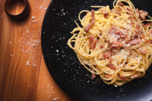

Pasta Carbonara

Description
Carbonara is an Italian pasta dish from Rome.
Ingredients
- Pasta
- Bacon bits
- Sour cream
- Grated cheese
- Egg
- Salt and pepper
Steps
- Cook the pasta
- Meanwhile, brown the bacon bits in a dry frying pan
- When they are golden, add the sour cream and simmer for 10 minutes
- Drain the pasta and pour it into the sauce
- Add a beaten egg, salt and paper
- Mix and serve sprinkled with cheese